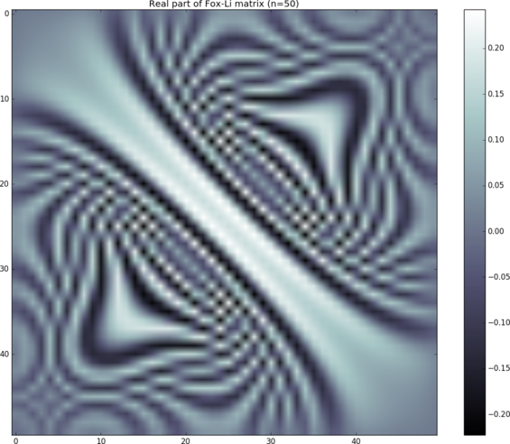
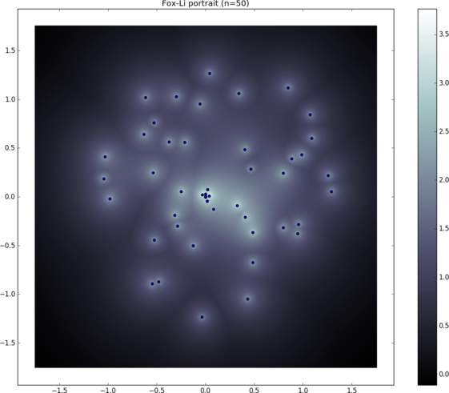
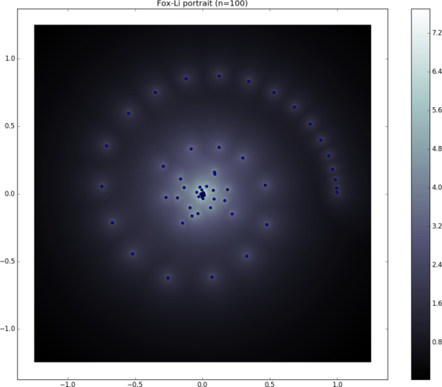

A brief tour of the library¶
This is just starting to be sketched and the details should be filled in soon.
Boiler-plate programs¶
Elemental installations include a file named ElVars which can be included
in a Makefile to simplify reproducing the build environment used for
building Elemental. For example, a Makefile
include /usr/local/conf/ElVars
%: %.cpp
$(CXX) $(EL_COMPILE_FLAGS) $< -o $@ $(EL_LINK_FLAGS) $(EL_LIBS)
should successfully compile and link any .cpp drivers in the same folder as
the Makefile (after running make). A simple C++ driver for Elemental
should have a main of the basic form
#include <El.hpp>
int main( int argc, char* argv[] )
{
El::Environment env( argc, argv );
try {
// Nontrivial computation goes here
} catch( std::exception& except ) { El::ReportException(except); }
return 0;
}
On OS X, successfully running said programs typically requires setting the
environment variable DYLD_LIBRARY_PATH to include the location of the
Elemental shared library, e.g., /usr/local/lib. On Unix systems, the
LD_LIBRARY_PATH variable should be set instead.
In order to use Elemental’s python interface, one must also set the PYTHONPATH variable to include the python/ subfolder of the installation, e.g.,
/usr/local/python. The program
import El
A = El.Matrix(El.dTag)
El.Uniform( A, 10, 10 )
El.Print( A, "A" )
should print a 10 x 10 matrix if the configuration was successful.
Floating-point types¶
Elemental supports a variety of different floating-point types; the typical
order of increasing cost is float, double, El::DoubleDouble,
El::QuadDouble, El::Quad, El::BigFloat. El::DoubleDouble and
El::QuadDouble are essentially concatenations of the mantissas of two and
four doubles (respectively), while El::Quad is an IEEE 128-bit format that
is typically implemented in software, and El::BigFloat is a wrapper for
GNU MPFR’s arbitrary-precision floating-point arithmetic.
#include <El.hpp>
template<typename Real>
void QueryLimits()
{
El::Output("base: ",El::limits::Base<Real>());
El::Output("epsilon: ",El::limits::Epsilon<Real>());
El::Output("precision: ",El::limits::Precision<Real>());
El::Output("min: ",El::limits::Min<Real>());
El::Output("max: ",El::limits::Max<Real>());
El::Output("lowest: ",El::limits::Lowest<Real>());
}
float¶
The 32-bit IEEE floating-point type yields an output from
QueryLimits<float>() of:
base: 2
epsilon: 5.96046e-08
precision: 1.19209e-07
min: 1.17549e-38
max: 3.40282e+38
lowest: -3.40282e+38
double¶
The 64-bit IEEE floating-point type yields an output from
QueryLimits<double>() of:
base: 2
epsilon: 1.11022e-16
precision: 2.22045e-16
min: 2.22507e-308
max: 1.79769e+308
lowest: -1.79769e+308
DoubleDouble¶
The concatenation of the mantissas from two 64-bit IEEE floating-point types,
El::DoubleDouble, results in:
base: 2.000000e+00
epsilon: 2.465190e-32
precision: 4.930381e-32
min: 2.004168e-292
max: 1.797693e+308
lowest: -1.797693e+308
This datatype is only available if Elemental was configured with support for the
package QD (the preprocessor definition EL_HAVE_QD will exist if this is the case).
QuadDouble¶
The concatenation of the mantissas from four 64-bit IEEE floating-point types,
El::QuadDouble, results in:
base: 2.000000e+00
epsilon: 6.077163e-64
precision: 1.215433e-63
min: 1.625975e-260
max: 1.797693e+308
lowest: -1.797693e+308
Like El::DoubleDouble, this datatype is only available if Elemental was
configured with support for the package
QD (the preprocessor
definition EL_HAVE_QD will exist if this is the case).
Quad¶
The 128-bit IEEE floating-point type (which is made available by the GNU and Intel compilers), El::Quad, yields:
base: 2.000000e+00
epsilon: 9.629650e-35
precision: 1.925930e-34
min: 3.362103e-4932
max: 1.189731e+4932
lowest: -1.189731e+4932
This datatype is only available if Elemental was configured with support for
__float128 via
libquadmath
(the preprocessor definition EL_HAVE_QUAD will exist if this is the case).
BigFloat¶
The arbitrary-precision floating-point type in Elemental, El::BigFloat,
which currently builds on top of GNU MPFR, defaults to 256-bit but is
configurable at runtime with the routine
void El::mpfr::SetPrecision( mpfr_prec_t precision ). With the default
choice of 256 bits, the output of our QueryLimits function is:
base: 2
epsilon: 8.63616855509444462538635186280039957111600036443628138502370347016859180316243e-78
precision: 1.72723371101888892507727037256007991422320007288725627700474069403371836063249e-77
min: 2.38256490488795107321616978173267452041519612555923978795502375260094538610432e-323228497
max: 2.09857871646738769240435811688383907063809796547335262778664622571024044777575e+323228496
lowest: -2.09857871646738769240435811688383907063809796547335262778664622571024044777575e+323228496
After a call to El::mpfr::SetPrecision( 1024 ), the output should become:
base: 2
epsilon: 5.56268464626800345772558179333101016054803995115582957638331854221801108703479548963570789753127755141016834932758952751288108540388365027214003096344429705282694498383000582619902536860645909017980391261735625933552093812701662654164539737180122794992147909912125158977192529576218699945221938437487362895113e-309
precision: 1.11253692925360069154511635866620203210960799023116591527666370844360221740695909792714157950625551028203366986551790550257621708077673005442800619268885941056538899676600116523980507372129181803596078252347125186710418762540332530832907947436024558998429581982425031795438505915243739989044387687497472579023e-308
min: 2.38256490488795107321616978173267452041519612555923978795502375260094538610432437489305775137932142344261757534893513700376849772992139878050298035792983488792657869701244309719036212063256710725856070515025356232010332123318365401263732225092389771322296946086646765801855827879773904684428316399822674037349e-323228497
max: 2.09857871646738769240435811688383907063809796547335262778664622571024044777576820818355304081267655987295599577960564840596747121502665142009783113610500048360066244023816505568400011005103679303701081473191703433515051267336632313268218262621740510855082829034802224115869883581782547386877774641524094504273e+323228496
lowest: -2.09857871646738769240435811688383907063809796547335262778664622571024044777576820818355304081267655987295599577960564840596747121502665142009783113610500048360066244023816505568400011005103679303701081473191703433515051267336632313268218262621740510855082829034802224115869883581782547386877774641524094504273e+323228496
This datatype is only available if Elemental was configured with support for
MPFR and
MPC
(the preprocessor definition EL_HAVE_MPC will exist if this is the case).
Dense linear algebra¶
Solving linear systems¶
A sequential Hilbert example¶
As a pathological example, the following routine can be used to test a Cholesky-based linear system solver on a Hilbert matrix for various precisions:
template<typename Real>
void SolveHilbert( Int n )
{
El::Output("Attempting to solve Hilbert system with ",El::TypeName<Real>());
// Form an n x n Hilbert matrix
El::Matrix<Real> A;
El::Hilbert( A, n );
// Form a uniform random vector
El::Matrix<Real> x;
El::Uniform( x, n, 1 );
const Real xFrob = El::FrobeniusNorm( x );
// Form b := A x using a GEneral Matrix Vector (GEMV) product.
// The terminology is derived from the BLAS naming convention.
El::Matrix<Real> b;
El::Gemv( El::NORMAL, Real(1), A, x, b );
const Real bFrob = El::FrobeniusNorm( b );
// Form xComp := inv(A) b using a solver that exploits the fact that
// Hilbert matrices are Hermitian Positive-Definite (HPD).
El::Matrix<Real> xComp(b);
El::HPDSolve( El::LOWER, El::NORMAL, A, xComp );
// Form r := b - A x
El::Matrix<Real> r(b);
El::Gemv( El::NORMAL, Real(-1), A, xComp, Real(1), r );
const Real rFrob = El::FrobeniusNorm( r );
El::Output("|| r ||_2 / || b ||_2 = ",rFrob/bFrob);
// Form e := x - xComp
El::Matrix<Real> e(x);
e -= xComp;
const Real eFrob = El::FrobeniusNorm( e );
El::Output("|| e ||_2 / || x ||_2 = ",eFrob/xFrob);
El::Output("");
}
A main function for calling this should ideally separately handle exceptions
for each datatype, as it turns out that neither single-precision nor
double-precision can successfully factor 20 x 20 Hilbert matrices:
int main( int argc, char* argv[] )
{
El::Environment env( argc, argv );
try
{
const El::Int n = El::Input("--n","matrix width",20);
#ifdef EL_HAVE_MPC
mpfr_prec_t prec = El::Input("--prec","MPFR precision",256);
#endif
El::ProcessInput();
#ifdef EL_HAVE_MPC
El::mpfr::SetPrecision( prec );
#endif
try { SolveHilbert<float>( n ); }
catch( std::exception& e ) { El::ReportException(e); }
try { SolveHilbert<double>( n ); }
catch( std::exception& e ) { El::ReportException(e); }
#ifdef EL_HAVE_QD
try { SolveHilbert<El::DoubleDouble>( n ); }
catch( std::exception& e ) { El::ReportException(e); }
try { SolveHilbert<El::QuadDouble>( n ); }
catch( std::exception& e ) { El::ReportException(e); }
#endif
#ifdef EL_HAVE_QUAD
try { SolveHilbert<El::Quad>( n ); }
catch( std::exception& e ) { El::ReportException(e); }
#endif
#ifdef EL_HAVE_MPC
try { SolveHilbert<El::BigFloat>( n ); }
catch( std::exception& e ) { El::ReportException(e); }
#endif
} catch( std::exception& e ) { El::ReportException(e); }
return 0;
}
For a 20 x 20 Hilbert matrix, one should see output of the form:
Attempting to solve Hilbert system with float
Process 0 caught error message:
A was not numerically HPD
Attempting to solve Hilbert system with double
Process 0 caught error message:
A was not numerically HPD
Attempting to solve Hilbert system with DoubleDouble
|| r ||_2 / || b ||_2 = 3.543271e-32
|| e ||_2 / || x ||_2 = 3.538193e-06
Attempting to solve Hilbert system with QuadDouble
|| r ||_2 / || b ||_2 = 2.506190e-65
|| e ||_2 / || x ||_2 = 2.439582e-38
Attempting to solve Hilbert system with Quad
|| r ||_2 / || b ||_2 = 2.745784e-34
|| e ||_2 / || x ||_2 = 7.907429e-08
Attempting to solve Hilbert system with BigFloat
|| r ||_2 / || b ||_2 = 1.9482282137301946384577456453427454630087917713177475059958544871005206470301e-77
|| e ||_2 / || x ||_2 = 2.28840034493301788424999659531588179908629747565564912546598839357700494446305e-51
A cursory comparison of the residual and solution errors relative to machine epsilon reveals that the relative residuals are near optimal but the relative solution error loses about 26 digits of accuracy. Because the relative residuals are on the order of machine epsilon, iterative refinement cannot be expected to yield any improvement.
A distributed uniform random example¶
Modest changes to the above sequential example provide a distributed (real or complex) analogue for uniform random matrices:
template<typename Field> // 'Field' can be complex, e.g., El::Complex<double>
void SolveUniform( El::Int n, const El::Grid& grid )
{
// Since 'Field' could be real or complex, Elemental has a convenience
// template for extracting the real 'base' field.
typedef El::Base<Field> Real;
if( grid.Rank() == 0 )
El::Output
("Attempting to solve uniform system with ",El::TypeName<Field>());
// Form an n x n random matrix with i.i.d. entries sampled from the
// uniform distribution over the ball of radius 'radius' centered at
const Field center = Field(0); // center samples at the origin
const Real radius = Real(1); // sample over ball of radius 1
El::DistMatrix<Field> A(grid);
El::Uniform( A, n, n, center, radius );
// Form a uniform random vector
El::DistMatrix<Field> x(grid);
El::Uniform( x, n, 1 );
const Real xFrob = El::FrobeniusNorm( x );
// Form b := A x using a GEneral Matrix Vector (GEMV) product.
// The terminology is derived from the BLAS naming convention.
El::DistMatrix<Field> b(grid);
El::Gemv( El::NORMAL, Field(1), A, x, b );
const Real bFrob = El::FrobeniusNorm( b );
// Form xComp := inv(A) b
El::DistMatrix<Field> xComp(b);
El::LinearSolve( A, xComp );
// Form r := b - A x
El::DistMatrix<Field> r(b);
El::Gemv( El::NORMAL, Field(-1), A, xComp, Field(1), r );
const Real rFrob = El::FrobeniusNorm( r );
if( grid.Rank() == 0 )
El::Output("|| r ||_2 / || b ||_2 = ",rFrob/bFrob);
// Form e := x - xComp
El::DistMatrix<Field> e(x);
e -= xComp;
const Real eFrob = El::FrobeniusNorm( e );
if( grid.Rank() == 0 )
{
El::Output("|| e ||_2 / || x ||_2 = ",eFrob/xFrob);
El::Output("");
}
}
An extremely basic (especially in the sense of not configuring the process grid) example of driving the above routine for the suite of datatypes is given below. Unlike the previous example, there is no need to wrap every single test with an try/catch block since we are not attempting to solve pathologically ill-conditioned systems.
int main( int argc, char* argv[] )
{
El::Environment env( argc, argv );
try
{
const El::Int n = El::Input("--n","matrix width",20);
#ifdef EL_HAVE_MPC
mpfr_prec_t prec = El::Input("--prec","MPFR precision",256);
#endif
El::ProcessInput();
#ifdef EL_HAVE_MPC
El::mpfr::SetPrecision( prec );
#endif
// While this is equivalent to the default constructor, it is a
// middle-of-the-road example of building a process grid. If
// performance is important, passing in a good height for the process
// grid (and ensuring a good mapping of processes to your network)
// is highly recommended.
const El::Grid grid(El::mpi::COMM_WORLD);
SolveUniform<float>( n, grid );
SolveUniform<El::Complex<float>>( n, grid );
SolveUniform<double>( n, grid );
SolveUniform<El::Complex<double>>( n, grid );
#ifdef EL_HAVE_QD
SolveUniform<El::DoubleDouble>( n, grid );
SolveUniform<El::Complex<El::DoubleDouble>>( n, grid );
SolveUniform<El::QuadDouble>( n, grid );
SolveUniform<El::Complex<El::QuadDouble>>( n, grid );
#endif
#ifdef EL_HAVE_QUAD
SolveUniform<El::Quad>( n, grid );
SolveUniform<El::Complex<El::Quad>>( n, grid );
#endif
#ifdef EL_HAVE_MPC
SolveUniform<El::BigFloat>( n, grid );
SolveUniform<El::Complex<El::BigFloat>>( n, grid );
#endif
} catch( std::exception& e ) { El::ReportException(e); }
return 0;
}
One should see output of the form:
Attempting to solve uniform system with float
|| r ||_2 / || b ||_2 = 2.67869e-07
|| e ||_2 / || x ||_2 = 5.59922e-06
Attempting to solve uniform system with Complex<float>
|| r ||_2 / || b ||_2 = 2.90457e-07
|| e ||_2 / || x ||_2 = 1.6407e-06
Attempting to solve uniform system with double
|| r ||_2 / || b ||_2 = 5.45493e-16
|| e ||_2 / || x ||_2 = 1.74868e-15
Attempting to solve uniform system with Complex<double>
|| r ||_2 / || b ||_2 = 5.74873e-16
|| e ||_2 / || x ||_2 = 1.04947e-15
Attempting to solve uniform system with DoubleDouble
|| r ||_2 / || b ||_2 = 5.287884e-32
|| e ||_2 / || x ||_2 = 7.218625e-32
Attempting to solve uniform system with Complex<DoubleDouble>
|| r ||_2 / || b ||_2 = 6.457957e-32
|| e ||_2 / || x ||_2 = 1.449757e-31
Attempting to solve uniform system with QuadDouble
|| r ||_2 / || b ||_2 = 1.235778e-64
|| e ||_2 / || x ||_2 = 7.264402e-64
Attempting to solve uniform system with Complex<QuadDouble>
|| r ||_2 / || b ||_2 = 2.222868e-64
|| e ||_2 / || x ||_2 = 7.022524e-64
Attempting to solve uniform system with Quad
|| r ||_2 / || b ||_2 = 3.638647e-34
|| e ||_2 / || x ||_2 = 2.493450e-33
Attempting to solve uniform system with Complex<Quad>
|| r ||_2 / || b ||_2 = 4.912223e-34
|| e ||_2 / || x ||_2 = 1.251209e-32
Attempting to solve uniform system with BigFloat
|| r ||_2 / || b ||_2 = 2.16653828655365239586948146682077468955614163540705037520406655402511420652447e-77
|| e ||_2 / || x ||_2 = 2.97048990994165182685234224120022319803727420306104459599455276499915869056496e-76
Attempting to solve uniform system with Complex<BigFloat>
|| r ||_2 / || b ||_2 = 3.24738616195777851543838631131220519424253089607715836789726606336887173848747e-77
|| e ||_2 / || x ||_2 = 3.17455703192509779735989674848792372192302739322476068009648661219152697503029e-76
Factorizations (and updating them)¶
Cholesky¶
Elemental provides sequential and distributed implementations (for its suite of datatypes) for Cholesky factorizations and quadratic-time low-rank factorization updates and downdates. The following shows a generic routine for exercising these interfaces in a sequential environment:
template<typename Field>
void FormAndUpdateCholesky( El::Int n, El::Int rank, bool print )
{
El::Output("Testing Cholesky updates with ",El::TypeName<Field>());
typedef El::Base<Field> Real;
El::Timer timer;
// Generate a uniform random n x n matrix A.
El::Matrix<Field> A;
El::Uniform( A, n, n );
if( print )
El::Print( A, "A" );
// Form the Symmetric Positive Semi-Definite matrix C := A A^H + I.
El::Matrix<Field> C;
El::Identity( C, n, n );
El::Herk( El::LOWER, El::NORMAL, Real(1), A, Real(1), C );
if( print )
El::Print( C, "C" );
// Overwrite the lower triangle of C with its Cholesky factor.
timer.Start();
El::Cholesky( El::LOWER, C );
El::Output("Initial Cholesky: ",timer.Stop()," [sec]");
El::MakeTrapezoidal( El::LOWER, C );
if( print )
El::Print( C, "Cholesky factor of C" );
// Update the Cholesky factor of C to the Cholesky factor of C + 2 U U^H.
El::Matrix<Field> U;
El::Uniform( U, n, rank );
if( print )
El::Print( U, "U" );
timer.Start();
El::CholeskyMod( El::LOWER, C, Real(2), U );
El::Output("Cholesky update of rank ",rank,": ",timer.Stop()," [sec]");
if( print )
El::Print( C, "Cholesky factor of C + 2 U U^H" );
// Downdate Cholesky factor to C + 2 U U^H - V V^H, with || V ||_F = 1.
El::Matrix<Field> V;
El::Uniform( V, n, rank );
const Real VOrigFrob = El::FrobeniusNorm( V );
El::Scale( Field(1)/VOrigFrob, V );
if( print )
El::Print( V, "V" );
timer.Start();
El::CholeskyMod( El::LOWER, C, Real(-1), V );
El::Output("Cholesky downdate of rank ",rank,": ",timer.Stop()," [sec]");
if( print )
El::Print( C, "Cholesky factor of C + 2 U U^H - V V^H" );
El::Output("");
}
Running on a recent Macbook Pro with Accelerate and VECLIB_MAXIMUM_THREADS=1
for 4000 x 4000 matrices and rank-two modifications should produce
output of the form:
Testing with float
Initial Cholesky: 0.351594 [sec]
Cholesky update of rank 2: 0.0181482 [sec]
Cholesky downdate of rank 2: 0.0203956 [sec]
Testing with Complex<float>
Initial Cholesky: 3.78963 [sec]
Cholesky update of rank 2: 0.0632135 [sec]
Cholesky downdate of rank 2: 0.0666767 [sec]
Testing with double
Initial Cholesky: 0.679954 [sec]
Cholesky update of rank 2: 0.0236046 [sec]
Cholesky downdate of rank 2: 0.0277888 [sec]
Testing with Complex<double>
Initial Cholesky: 7.64342 [sec]
Cholesky update of rank 2: 0.104679 [sec]
Cholesky downdate of rank 2: 0.10832 [sec]
Bunch-Kaufman¶
LU¶
Elemental provides sequential and distributed implementations of Gaussian Elimination with no pivoting, partial pivoting, and full pivoting, as well as quadratic-time algorithms for performing low-rank modifications of an existing factorization.
Note
The 0.87.5 release only supported a rank-one LU update interface, while 0.87.6 supports a higher-rank interfaces that calls the rank-one interface in a loop. This approach will be replaced with a (much faster) single-pass low-rank updating scheme in future releases.
template<typename Field>
void FormAndUpdateLU( El::Int n, El::Int rank, bool print )
{
El::Output("Testing LU updates with ",El::TypeName<Field>());
typedef El::Base<Field> Real;
El::Timer timer;
// Generate a random n x n matrix A.
El::Matrix<Field> A;
El::Uniform( A, n, n );
if( print )
El::Print( A, "A" );
// Overwrite A with its LU factorization (with partial pivoting).
timer.Start();
El::Permutation P;
El::LU( A, P );
El::Output("Initial LU: ",timer.Stop()," [sec]");
if( print )
El::Print( A, "In-place LU of A" );
// Update the LU factors of A to those of A + 2 X Y^H.
El::Matrix<Field> X, Y;
El::Uniform( X, n, rank );
El::Uniform( Y, n, rank );
if( print )
{
El::Print( X, "X" );
El::Print( Y, "Y" );
}
timer.Start();
const bool conjugate = true;
El::LUMod( A, P, X, Y, conjugate );
El::Output("LU update of rank ",rank,": ",timer.Stop()," [sec]");
if( print )
El::Print( A, "In-place LU of A + 2 X Y^H" );
El::Output("");
}
Running this for float and double on a single core should for 4000 x 4000
matrices and rank-two updates on a recent Macbook Pro with Accelerate and
VECLIB_MAXIMUM_THREADS=1 should yield results similar to:
Testing LU updates with float
Initial LU: 1.01272 [sec]
LU update of rank 2: 0.230531 [sec]
Testing LU updates with Complex<float>
Initial LU: 8.1526 [sec]
LU update of rank 2: 0.268828 [sec]
Testing LU updates with double
Initial LU: 1.96392 [sec]
LU update of rank 2: 0.292697 [sec]
Testing LU updates with Complex<double>
Initial LU: 15.9653 [sec]
LU update of rank 2: 0.398748 [sec]
QR¶
Hermitian eigensolvers (and their extensions)¶
Hermitian eigensolvers¶
Skew-Hermitian eigensolvers¶
Hermitian generalized-definite eigensolvers¶
Singular Value Decompositions¶
template<typename Field>
void TestSVD( El::Int m, El::Int n, El::Int rank )
{
El::Output("Testing SVD with ",El::TypeName<Field>());
typedef El::Base<Field> Real;
// Form a random rank-r m x n matrix A := X Y
El::Matrix<Field> A;
El::Matrix<Field> X, Y;
El::Uniform( X, m, rank );
El::Uniform( Y, n, rank );
El::Gemm( El::NORMAL, El::NORMAL, Field(1), X, Y, A );
// Decide on the details behind the SVD solver
El::SVDCtrl<Real> ctrl;
ctrl.bidiagSVDCtrl.useQR = false; // This is the default option
// We can choose between El::THIN_SVD, El::COMPACT_SVD, El::FULL_SVD,
// and El::PRODUCT_SVD. A 'compact' SVD is most appropriate when the rank
// is less than the smallest dimension. 'Thin' is the default.
ctrl.bidiagSVDCtrl.approach = El::COMPACT_SVD;
// We can optionally request more accurate (but slower) internal QR
// iterations at the base of our Divide and Conquer tree. The default is
// El::RELATIVE_TO_MAX_SING_VAL_TOL.
ctrl.bidiagSVDCtrl.tolType = El::RELATIVE_TO_SELF_SING_VAL_TOL;
El::Matrix<Real> s;
El::Matrix<Field> U, V;
El::SVDInfo info = El::SVD( A, U, s, V, ctrl );
El::Output
("Number of secular equation iterations: ",
info.bidiagSVDInfo.dcInfo.secularInfo.numIterations);
El::Output
("Number of secular equation deflations: ",
info.bidiagSVDInfo.dcInfo.secularInfo.numDeflations);
El::Output
("Number of internal QR iterations: ",
info.bidiagSVDInfo.qrInfo.numIterations);
}
Schur decompositions¶
Pseudospectra¶
Elemental contains many different routines for computing one-norm and two-norm pseudospectra, i.e.,
but perhaps the simplest is via Elemental’s Python interface. For example, the following Python script computes and visualizes the pseudospectra of the famous Fox-Li/Landau matrices (of dimension 50, 100, and 300) over a 300 x 300 uniform grid.
import math, time, El
if El.havePyPlot:
El.plt.set_cmap('bone')
# pyplot.set_cmap seems to open an empty figure (which can be detected by
# running pyplot.get_fignums()), and so we manually close it. Unfortunately,
# some versions of pyplot generate a spurious warning of:
#
# can't invoke "event" command: application has been destroyed
#
# when calling pyplot.close().
El.plt.close(1)
realRes = imagRes = 300 # grid resolution
# Display an instance of the Fox-Li/Landau matrix
A = El.DistMatrix(El.zTag)
nList = (50,100,300)
for n in nList:
El.FoxLi(A,n)
# Show the Real part of the matrix
AReal = El.DistMatrix(El.dTag)
El.RealPart(A,AReal)
El.Display(AReal,'Real part of Fox-Li matrix (n={})'.format(n))
# Compute the Schur decomposition (overwriting A with the Schur factor)
schurStart = time.time()
w = El.Schur(A)
schurStop = time.time()
if A.Grid().Rank() is 0:
print('Schur decomp for n={}: {} [sec]'.format(n,schurStop-schurStart,))
# Compute the spectral portrait of the Schur factor
portraitStart = time.time()
portrait, box = El.TriangularSpectralPortrait(A,realRes,imagRes)
portraitStop = time.time()
if A.Grid().Rank() is 0:
print('Portrait for n={}: {} [sec]'.format(n,portraitStop-portraitStart,))
# Display the eigenvalues on top of log10 plot of portrait
El.DisplayPortrait(portrait,box,title='Fox-Li portrait (n={})'.format(n),
eigvals=w)
El.Finalize()
An equivalent C++ program should should call the routines El::Schur and El::TriangularSpectralPortrait.
Some of the output of the above script includes the visualization of the real part of the 50 x 50 discretization:
as well as its pseudospectra:
Similar pseudospectra are produced for the 100 x 100 and 300 x 300 discretizations:
Sparse-direct linear and (generalized) least squares solvers¶
Unpivoted LDL¶
Symmetric Quasi-SemiDefinite (SQSD) systems¶
General linear systems¶
Least Squares¶
Tikhonov¶
Equality-constrained Least Squares (LSE)¶
General Linear Model (GLM)¶
Solving Linear, Quadratic Programs, and Second-Order Cone Programs¶
Elemental contains sequential and distributed, dense and sparse, variable-precision, interfaces for solving Linear Programs, Quadratic Programs, and Second-Order Cone Programs via primal-dual Interior Point Methods. Further, each of these classes has solvers tailored to direct conic form, e.g.,
and affine conic form, e.g.,
where \(\mathcal{K}\) is a product of Second-Order and Positive Orthant
cones. Since Elemental supports the gamut of floating-point types from float
up to El::BigFloat, one can solve Second-Order Cone Programs to 1000 digits
of accuracy (should one so desire).
Linear Programs¶
For example, one could solve a random dense LP with an arbitrary floating-point type using:
Note
Due to some equilibration routines having only been defined for all cases except for sequential dense matrices, the following does not work in 0.87.5 but works in subsequent versions.
#include <El.hpp>
template<typename Real>
void RandomFeasibleLP( El::Int m, El::Int n, El::Int k )
{
El::Output("Testing with ",El::TypeName<Real>());
// Create random (primal feasible) inputs for the primal/dual problem
// arginf_{x,s} { c^T x | A x = b, G x + s = h, s >= 0 }
// argsup_{y,z} { -b^T y - h^T z | A^T y + G^T z + c = 0, z >= 0 }.
// xFeas and sFeas are only used for problem generation
El::Matrix<Real> xFeas, sFeas;
El::Uniform( xFeas, n, 1 ); // Sample over B_1(0)
El::Uniform( sFeas, k, 1, Real(1), Real(1) ); // Sample over B_1(1)
El::Matrix<Real> A, G, b, c, h;
El::Uniform( A, m, n );
El::Uniform( G, k, n );
El::Gemv( El::NORMAL, Real(1), A, xFeas, b );
El::Gemv( El::NORMAL, Real(1), G, xFeas, h );
h += sFeas;
El::Uniform( c, n, 1 );
// Solve the primal/dual Linear Program with the default options
El::Matrix<Real> x, y, z, s;
El::Timer timer;
timer.Start();
El::LP( A, G, b, c, h, x, y, z, s );
El::Output("Primal-dual LP took ",timer.Stop()," seconds");
// Print the primal and dual objective values
const Real primal = El::Dot(c,x);
const Real dual = -El::Dot(b,y) - El::Dot(h,z);
const Real relGap = El::Abs(primal-dual) / El::Max(El::Abs(dual),Real(1));
El::Output("c^T x = ",primal);
El::Output("-b^T y - h^T z = ",dual);
El::Output("|gap| / max( |dual|, 1 ) = ",relGap);
// Print the relative primal feasibility residual,
// || A x - b ||_2 / max( || b ||_2, 1 ).
El::Matrix<Real> rPrimal;
El::Gemv( El::NORMAL, Real(1), A, x, rPrimal );
rPrimal -= b;
const Real bFrob = El::FrobeniusNorm( b );
const Real rPrimalFrob = El::FrobeniusNorm( rPrimal );
const Real primalRelResid = rPrimalFrob / El::Max( bFrob, Real(1) );
El::Output("|| A x - b ||_2 / || b ||_2 = ",primalRelResid);
// Print the relative dual feasiability residual,
// || A^T y + G^T z + c ||_2 / max( || c ||_2, 1 ).
El::Matrix<Real> rDual;
El::Gemv( El::TRANSPOSE, Real(1), A, y, rDual );
El::Gemv( El::TRANSPOSE, Real(1), G, z, Real(1), rDual );
rDual += c;
const Real cFrob = El::FrobeniusNorm( c );
const Real rDualFrob = El::FrobeniusNorm( rDual );
const Real dualRelResid = rDualFrob / El::Max( cFrob, Real(1) );
El::Output
("|| A^T y + G^T z + c ||_2 / max( || c ||_2, 1 ) = ",dualRelResid);
El::Output("");
}
With a driver such as
int main( int argc, char* argv[] )
{
El::Environment env( argc, argv );
try
{
const El::Int m = El::Input("--m","height of A",70);
const El::Int n = El::Input("--n","width of A",80);
const El::Int k = El::Input("--k","height of G",90);
El::ProcessInput();
RandomFeasibleLP<float>( m, n, k );
RandomFeasibleLP<double>( m, n, k );
#ifdef EL_HAVE_QD
RandomFeasibleLP<El::DoubleDouble>( m, n, k );
RandomFeasibleLP<El::QuadDouble>( m, n, k );
#endif
#ifdef EL_HAVE_QUAD
RandomFeasibleLP<El::Quad>( m, n, k );
#endif
#ifdef EL_HAVE_MPC
RandomFeasibleLP<El::BigFloat>( m, n, k );
#endif
}
catch( std::exception& e ) { El::ReportException(e); }
return 0;
}
one should see output of the form:
Testing with float
Primal-dual LP took XXX seconds
c^T x = XXX
-b^T y - h^T z = XXX
|gap| / max( |dual|, 1 ) = 5.53131e-05
|| A x - b ||_2 / || b ||_2 = 1.38188e-07
|| A^T y + G^T z + c ||_2 / max( || c ||_2, 1 ) = 9.74921e-07
Testing with double
Primal-dual LP took XXX seconds
c^T x = XXX
-b^T y - h^T z = XXX
|gap| / max( |dual|, 1 ) = 4.88859e-10
|| A x - b ||_2 / || b ||_2 = 2.7623e-16
|| A^T y + G^T z + c ||_2 / max( || c ||_2, 1 ) = 2.17927e-15
Testing with DoubleDouble
Primal-dual LP took XXX seconds
c^T x = XXX
-b^T y - h^T z = XXX
|gap| / max( |dual|, 1 ) = 7.278639e-18
|| A x - b ||_2 / || b ||_2 = 4.697166e-32
|| A^T y + G^T z + c ||_2 / max( || c ||_2, 1 ) = 1.025945e-18
Testing with QuadDouble
Primal-dual LP took XXX seconds
c^T x = XXX
-b^T y - h^T z = XXX
|gap| / max( |dual|, 1 ) = 1.421369e-33
|| A x - b ||_2 / || b ||_2 = 7.062635e-65
|| A^T y + G^T z + c ||_2 / max( || c ||_2, 1 ) = 3.568571e-36
Testing with Quad
Primal-dual LP took XXX seconds
c^T x = XXX
-b^T y - h^T z = XXX
|gap| / max( |dual|, 1 ) = 2.508642e-18
|| A x - b ||_2 / || b ||_2 = 3.923351e-34
|| A^T y + G^T z + c ||_2 / max( || c ||_2, 1 ) = 3.076727e-20
Testing with BigFloat
Primal-dual LP took XXX seconds
c^T x = XXX
-b^T y - h^T z = XXX
|gap| / max( |dual|, 1 ) = 8.12654984542403493113930928544054111846416192203054855606794438829784991753557e-41
|| A x - b ||_2 / || b ||_2 = 3.41872271095398980556412036957797890873177437849829019239512280050095223533333e-77
|| A^T y + G^T z + c ||_2 / max( || c ||_2, 1 ) = 2.20856170189320269413056964848038584344997345561703519520787934256169419209754e-42
Quadratic Programs¶
Second-Order Cone Programs¶
Lattice reduction¶
Lenstra/Lenstra/Lovasz (LLL) basis reduction¶
Block Korkine-Zolotarev basis reduction (and its extensions)¶
Vanilla BKZ¶
“BKZ 2.0”¶
“y-sparse” enumeration¶
Solving Shortest Vector Problems¶
Elemental has fairly unique support for solving complex-valued Shortest Vector Problems. For example we can search for a short vector (via BKZ(15)) in a knapsack-type basis of dimension 20 with a bottom row uniformly sampled within the unit ball of radius one million via:
const El::Int blocksize = 15;
const El::Int n = 20;
const double radius = 1.e6;
El::Matrix<El::Complex<double>> B;
El::KnapsackTypeBasis( B, n, radius );
const double BOrigOne = El::OneNorm( B );
El::Output("|| B_orig ||_1 = ",BOrigOne);
El::Print( B, "BOrig" );
El::BKZCtrl<double> ctrl;
ctrl.blocksize = blocksize;
const double startTime = El::mpi::Time();
El::Matrix<El::Complex<double>> R;
auto info = El::BKZ( B, R, ctrl );
const double runTime = El::mpi::Time() - startTime;
El::Output
(" BKZ(",blocksize,",",delta,",",eta,") took ",runTime," seconds");
El::Output(" achieved delta: ",info.delta);
El::Output(" achieved eta: ",info.eta);
El::Output(" num swaps: ",info.numSwaps);
El::Output(" num enums: ",info.numEnums);
El::Output(" num failed enums: ",info.numEnumFailures);
El::Output(" log(vol(L)): ",info.logVol);
const double GH = El::LatticeGaussianHeuristic( info.rank, info.logVol );
const double challenge = targetRatio*GH;
El::Output(" GH(L): ",GH);
El::Output(" targetRatio*GH(L): ",challenge);
const double BOneNorm = El::OneNorm( B );
El::Output("|| B ||_1 = ",BOneNorm);
auto b0 = B( El::ALL, El::IR(0) );
const double b0Norm = El::FrobeniusNorm( b0 );
El::Output("|| b_0 ||_2 = ",b0Norm);
El::Print( b0, "b0" );
Running such a program should produce an output of the form:
|| B_orig ||_1 = 933416
BOrig
1+0i 0+0i 0+0i 0+0i 0+0i 0+0i 0+0i 0+0i 0+0i 0+0i 0+0i 0+0i 0+0i 0+0i 0+0i 0+0i 0+0i 0+0i 0+0i 0+0i
0+0i 1+0i 0+0i 0+0i 0+0i 0+0i 0+0i 0+0i 0+0i 0+0i 0+0i 0+0i 0+0i 0+0i 0+0i 0+0i 0+0i 0+0i 0+0i 0+0i
0+0i 0+0i 1+0i 0+0i 0+0i 0+0i 0+0i 0+0i 0+0i 0+0i 0+0i 0+0i 0+0i 0+0i 0+0i 0+0i 0+0i 0+0i 0+0i 0+0i
0+0i 0+0i 0+0i 1+0i 0+0i 0+0i 0+0i 0+0i 0+0i 0+0i 0+0i 0+0i 0+0i 0+0i 0+0i 0+0i 0+0i 0+0i 0+0i 0+0i
0+0i 0+0i 0+0i 0+0i 1+0i 0+0i 0+0i 0+0i 0+0i 0+0i 0+0i 0+0i 0+0i 0+0i 0+0i 0+0i 0+0i 0+0i 0+0i 0+0i
0+0i 0+0i 0+0i 0+0i 0+0i 1+0i 0+0i 0+0i 0+0i 0+0i 0+0i 0+0i 0+0i 0+0i 0+0i 0+0i 0+0i 0+0i 0+0i 0+0i
0+0i 0+0i 0+0i 0+0i 0+0i 0+0i 1+0i 0+0i 0+0i 0+0i 0+0i 0+0i 0+0i 0+0i 0+0i 0+0i 0+0i 0+0i 0+0i 0+0i
0+0i 0+0i 0+0i 0+0i 0+0i 0+0i 0+0i 1+0i 0+0i 0+0i 0+0i 0+0i 0+0i 0+0i 0+0i 0+0i 0+0i 0+0i 0+0i 0+0i
0+0i 0+0i 0+0i 0+0i 0+0i 0+0i 0+0i 0+0i 1+0i 0+0i 0+0i 0+0i 0+0i 0+0i 0+0i 0+0i 0+0i 0+0i 0+0i 0+0i
0+0i 0+0i 0+0i 0+0i 0+0i 0+0i 0+0i 0+0i 0+0i 1+0i 0+0i 0+0i 0+0i 0+0i 0+0i 0+0i 0+0i 0+0i 0+0i 0+0i
0+0i 0+0i 0+0i 0+0i 0+0i 0+0i 0+0i 0+0i 0+0i 0+0i 1+0i 0+0i 0+0i 0+0i 0+0i 0+0i 0+0i 0+0i 0+0i 0+0i
0+0i 0+0i 0+0i 0+0i 0+0i 0+0i 0+0i 0+0i 0+0i 0+0i 0+0i 1+0i 0+0i 0+0i 0+0i 0+0i 0+0i 0+0i 0+0i 0+0i
0+0i 0+0i 0+0i 0+0i 0+0i 0+0i 0+0i 0+0i 0+0i 0+0i 0+0i 0+0i 1+0i 0+0i 0+0i 0+0i 0+0i 0+0i 0+0i 0+0i
0+0i 0+0i 0+0i 0+0i 0+0i 0+0i 0+0i 0+0i 0+0i 0+0i 0+0i 0+0i 0+0i 1+0i 0+0i 0+0i 0+0i 0+0i 0+0i 0+0i
0+0i 0+0i 0+0i 0+0i 0+0i 0+0i 0+0i 0+0i 0+0i 0+0i 0+0i 0+0i 0+0i 0+0i 1+0i 0+0i 0+0i 0+0i 0+0i 0+0i
0+0i 0+0i 0+0i 0+0i 0+0i 0+0i 0+0i 0+0i 0+0i 0+0i 0+0i 0+0i 0+0i 0+0i 0+0i 1+0i 0+0i 0+0i 0+0i 0+0i
0+0i 0+0i 0+0i 0+0i 0+0i 0+0i 0+0i 0+0i 0+0i 0+0i 0+0i 0+0i 0+0i 0+0i 0+0i 0+0i 1+0i 0+0i 0+0i 0+0i
0+0i 0+0i 0+0i 0+0i 0+0i 0+0i 0+0i 0+0i 0+0i 0+0i 0+0i 0+0i 0+0i 0+0i 0+0i 0+0i 0+0i 1+0i 0+0i 0+0i
0+0i 0+0i 0+0i 0+0i 0+0i 0+0i 0+0i 0+0i 0+0i 0+0i 0+0i 0+0i 0+0i 0+0i 0+0i 0+0i 0+0i 0+0i 1+0i 0+0i
0+0i 0+0i 0+0i 0+0i 0+0i 0+0i 0+0i 0+0i 0+0i 0+0i 0+0i 0+0i 0+0i 0+0i 0+0i 0+0i 0+0i 0+0i 0+0i 1+0i
668149+-143040i -115412+-37575i -261199+-400829i -741830+252950i 926075+-8490i 781004+180128i -97427+-363934i -7501+-144117i 102183+533991i -777958+515795i -248767+201953i -173494+113497i 247815+484513i 92420+412569i -151694+134284i 550082+-285722i -312183+-1197i 467495+570767i 91402+242320i 38949+212937i
BKZ(15,0.9999,0.5) took 2.66103 seconds
achieved delta: 1.01546
achieved eta: 0.492272
num swaps: 3304
num enums: 86
num failed enums: 16
log(vol(L)): 14.7077
GH(L): 2.50488
targetRatio*GH(L): 2.63013
|| B ||_1 = 20.8284
|| b_0 ||_2 = 3.60555
b0
0+0i
-1+0i
0+-1i
0+0i
0+0i
0+0i
-1+0i
-1+0i
0+-1i
0+0i
0+0i
0+1i
0+0i
-1+-1i
0+0i
0+-1i
1+-1i
0+0i
0+0i
1+0i
1+0i
One can also easily solve SVPChallenge 40 via Elemental’s BKZ. (Though it is important to note that Elemental does not yet support the important aggressive precision-dropping optimization of libraries such as NTL and FPLLL).
Note
There is no agreed-upon convention for whether lattices should be represented as collections of column or row vectors. Elemental adopts the convention of column vectors, whereas the SVP Challenge uses row vectors. For this reason, in addition to [ and ] symbols needing to be removed from the above link, the matrix is transposed in the code below.
El::Matrix<Real> BTrans;
El::Read( BTrans, "SVPChallenge-40.txt" );
El::Matrix<Real> B;
El::Transpose( BTrans, B );
El::Matrix<Real> R; // Will hold the 'R' of the QR factorization of final B
El::BKZCtrl<Real> ctrl; // One can modify the members to customize BKZ
ctrl.blocksize = 20; // Enumerate over windows of 20 vectors at a time
auto info = El::BKZ( B, R, ctrl );
Integer dependence searches¶
References¶
- PEtAl2013
Jack Poulson, Bryan Marker, Robert A. van de Geijn, Jeff R. Hammond, and Nichols A. Romero, Elemental: A new framework for distributed memory dense matrix computations, ACM Transactions on Mathematical Software, Vol. 39, Issue 2, Article No. 13, 2013. DOI: http://dx.doi.org/10.1145/2427023.2427030